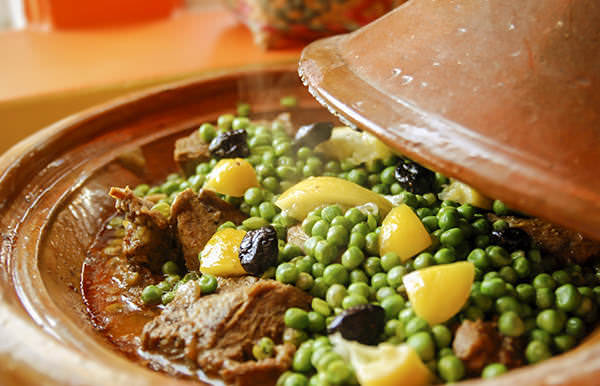

Tajine

Description
La France a le Steak Frites, l'Italie a les lasagnes,
et le Maroc a le Tajine
Par sa prouesse et sa bonté , le Maroc a reussi a faire jouir gustativement les tripes de plusieurs critiques..
La Cuisine Marocaine est la meilleur
Ingredients
- 1,5 kg d’épaule d’agneau ou de veau en gros morceaux
- 1 ½ c. à soupe épices à tajine moulues
- 2 c. à soupe gingembre frais haché ou 1 c. à soupe gingembre sec moulu
- 1 oignon tranché
- ¼ lb. beurre
- 6 tasses de petits pois
- 1 gros citron confit ou 3 petits, en morceaux
- Olives noires pour garnir
- Sel au goût
Etapes
- Frotter la viande avec les épices et le sel.
- Placer le beurre, l’oignon et la viande dans le tajine,
puis verser ¼ tasse d’eau.
Couvrir et placer sur un feu doux.
- Surveiller de temps en temps pour vous assurer qu’il ne
manque pas de liquide. Au besoin, ajouter un peu d’eau bouillante.
Résister à la tentation de remuer la viande!
- Lorsque la viande est cuite (entre 1h et 1h30), ajouter
les petits pois et les citrons confits. Secouer le tajine pour
que les pois se dispersent bien dans le jus.
Cuire 10 à 15 minutes supplémentaires.
- Garnir d’olives et servir avec du pain marocain
ou berbère (idéalement, éviter le riz et le couscous).